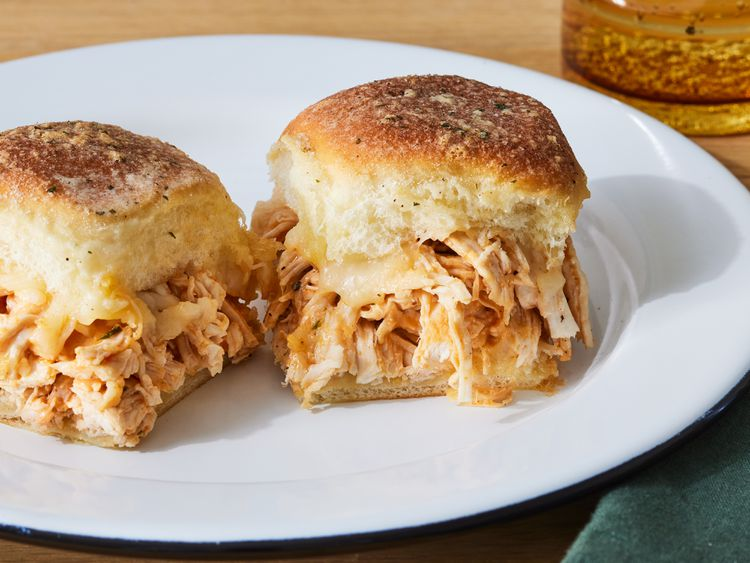

Home

Description
Buffalo chicken sliders are a delightful party favorite, thanks to their perfect blend of spiciness and creaminess. Made with Hawaiian sweet dinner rolls, these sliders feature a mixture of shredded Monterey Jack cheese, tender cooked chicken breast, cayenne pepper hot sauce, and ranch dressing. The chicken is first mixed with hot sauce and ranch dressing before being spread over the bottom half of the rolls and topped with more cheese. The slider assembly is completed by placing the top half of the rolls, brushing with melted butter, and sprinkling with dry ranch mix. These sliders are then baked until the cheese is melted and the tops are golden brown.
To make the perfect Buffalo chicken sliders, start by preheating your oven to 350 degrees F (175 degrees C) and preparing the rolls by cutting them in half horizontally. After sprinkling the bottom half with cheese, spread the spicy chicken mixture evenly. Top with more cheese and place the top half of the rolls over the chicken. Brush the rolls with melted butter and sprinkle with the remaining dry ranch mix before baking. For an extra touch, you can serve these sliders with a side of coleslaw or make them ahead of time by preparing the chicken mixture up to three days in advance. Just remember to reheat the chicken mixture before assembling and baking. These sliders are sure to be a hit at your next gathering!
Ingredients
- cooking spray
- 1 (12 ounce) package Hawaiian sweet dinner rolls
- 6 ounces Monterey Jack cheese, shredded (about 1 ½ cups), divided
- 3 cups finely shredded cooked chicken breast, warmed
- 1/4 cup cayenne pepper hot sauce (such as Frank’s RedHot®)
- 1/4 cup ranch dressing
- 1 (1 ounce) envelope ranch dressing mix, divided
- 2 tablespoons unsalted butter, melted
Steps
- Preheat the oven to 350 degrees F (175 degrees C). Gather all ingredients.
- Line a large-rimmed baking sheet with aluminum foil; lightly coat with cooking spray. Using a serrated bread knife, cut rolls in half horizontally, keeping top halves and bottom halves intact; place bottom half of rolls, cut-side up, on prepared baking sheet.
- Sprinkle 3/4 cup of the cheese evenly over bottom half of rolls.
- Stir together warmed chicken, hot sauce, ranch dressing, and 3 tablespoons of the ranch dressing mix in a large bowl until evenly coated.
- Top bottom half of rolls evenly with chicken mixture; sprinkle with remaining 3/4 cup cheese.
- Place top half of rolls over cheese. Brush tops and sides of rolls with melted butter. Sprinkle tops of rolls evenly with remaining 1/2 tablespoon ranch dressing mix.
- Bake in preheated oven until cheese is melted, tops of rolls are golden brown, and chicken mixture is heated through, about 10 minutes. Remove from oven, cut into 12 sliders and serve immediately.